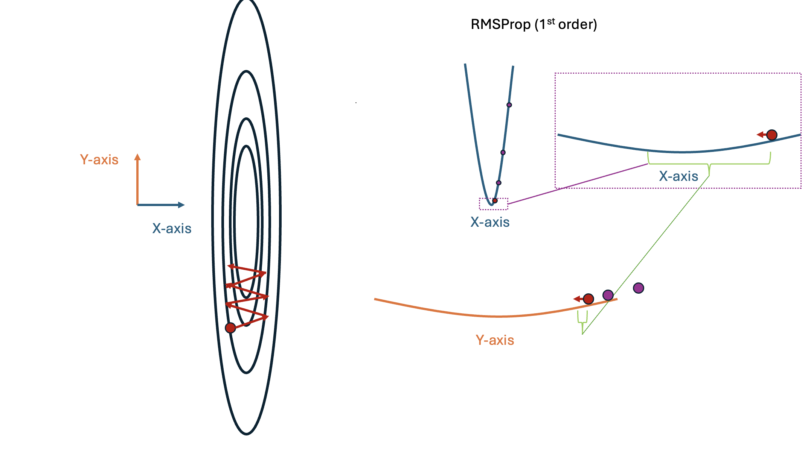

# 2 Hidden-layer network with dropout
model = nn.Sequential(nn.Dropout(0.5), nn.Linear(2, 10), nn.ReLU(),
nn.Dropout(0.5), nn.Linear(10, 10), nn.ReLU(),
nn.Dropout(0.5), nn.Linear(10, 1)
)Initialization
Review of expectation and variance
Expectation
\[\mathbb{E}\big[X \big] = \int_{x} x p(x) dx\quad \text{(Continuous random variables)}\]

Expectation
\[\mathbb{E}\big[X \big] = \sum_{x} x p(x) \quad \text{(Discrete random variables)}\]

Linearity of expectation
\[\mathbb{E}\big[ aX \big] = a\mathbb{E}\big[ X \big] \]
\[\mathbb{E}\bigg[ \sum_{i=1}^n X_i \bigg] = \sum_{i=1}^n \mathbb{E}\bigg[ X_i \bigg]\]
Variance
\[ Var\big[X\big] = \mathbb{E}\big[(X - \mathbb{E}[X])^2\big] \]
Properties of variance
\[ Var[X] = \mathbb{E}[X^2] - \mathbb{E}[X]^2 \]
\[ Var[aX] = a^2 Var[X] \]
If \(X\) and \(Y\) are independent: \[ Var[X + Y] = Var[X] + Var[Y] \]
Dropout
Dropout
Dropout rate: \(r\)
\[\text{DO}(\mathbf{X}, r) = \mathbf{D} \odot \mathbf{X}, \quad \mathbf{D} = \begin{bmatrix} d_{11} & d_{12} & \dots & d_{1n} \\ d_{21} & d_{22} & \dots & d_{2n} \\ \vdots & \vdots & \ddots & \vdots \\ d_{m1} & d_{m2} & \dots & d_{mn} \end{bmatrix} \] \[d_{ij} \sim \text{Bernoulli}(1-r)\]
Dropout
Within a NN layer:
\[ \phi(\mathbf{x}) = \sigma(\text{DO}_r(\mathbf{x})^T\mathbf{W} + \mathbf{b}) \]
Dropout
A network with several dropout layers:
\[f(\mathbf{x}, \mathbf{w}_0,...) = \text{DO}_r(\sigma( \text{DO}_r(\sigma( \text{DO}_r(\sigma(\text{DO}_r( \mathbf{x})^T \mathbf{W}_2 + \mathbf{b}_2))^T \mathbf{W}_1 + \mathbf{b}_1))^T \mathbf{w}_0 + \mathbf{b}_0\]
Dropout
A network with several dropout layers:
\[ \mathbf{a} = \sigma(\text{DO}_r(\mathbf{x})^T\mathbf{W}_2 + \mathbf{b}_2) \]
\[
\mathbf{b} = \sigma(\text{DO}_r(\mathbf{a})^T\mathbf{W}_1 + \mathbf{b}_1)
\]
\[
\mathbf{f} = \text{DO}_r(\mathbf{b})^T\mathbf{w}_0 + b_0
\]
Dropout

Dropout

Dropout at evaluation time
\[ \phi(\mathbf{x})_{train} = \sigma(\text{DO}_r(\mathbf{x})^T\mathbf{W} + \mathbf{b})\] \[ \rightarrow \quad \phi(\mathbf{x})_{eval} = \sigma(\mathbf{x}^T\mathbf{W} + \mathbf{b}) \]
This has a problem!
Dropout at evaluation time
Consider the expected value of a linear function with dropout:
\[ \mathbb{E}[ \text{DO}_r(\mathbf{x})^T\mathbf{w}] = \sum_i d_i x_i w_i, \quad d_i \sim \text{Bernoulli}(1-r) \]
Dropout at evaluation time
Consider the expected value of a linear function with dropout:
\[ \mathbb{E}[ \text{DO}_r(\mathbf{x})^T\mathbf{w}] = \sum_i d_i x_i w_i, \quad d_i \sim \text{Bernoulli}(1-r) \]
\[ = \sum_i p(d_i=1) x_i w_i = (1-r)\sum_i x_i w_i < \sum_i x_i w_i \]
If \(r=0.5\) then on average the output of our function with dropout will only be half as large as the function without dropout!
Dropout at evaluation time
Correct solution
Dropout at evaluation time
Simple (but not quite correct) solution
\[ \text{Dropout}_{eval}(\mathbf{X}, r) = (1-r) \mathbf{X} \]
This gives use the smooth prediction function we’re looking for:
Dropout in PyTorch
Optimization
Initialization
Gradient descent: \[ \mathbf{w}^{(k+1)} \longleftarrow \mathbf{w}^{(k)} - \alpha \nabla_{\mathbf{w}} \textbf{Loss}(\mathbf{w}^{(k)}, \mathbf{X}, \mathbf{y})\]
What do we choose for \(\mathbf{w}^{(0)}\)?
Convexity
Convex function \(f\)
\[ f(t x_1 + (1-t)x_2) \leq tf(x_1) + (1-t)f(x_2) \]
Convexity
Strictly convex function \(f\)
\[ f(t x_1 + (1-t)x_2)\ {\color{red}{<}}\ tf(x_1) + (1-t)f(x_2) \]
Convexity
Linear and logistic regression losses are convex (usually strictly)

Convexity
Linear and logistic regression losses are convex (usually strictly)
Gradient descent will always* get us to the right answer.
Convexity
Neural network losses are (usually) not convex!
Why?
Convexity
Two equivalent solutions

Symmetry-breaking
A simple network
\[ f(\mathbf{x}) = \sigma(\mathbf{x}^T\mathbf{W}_1)^T\mathbf{w}_0=\sigma(x_1 w_{11}) w_{01} +\sigma (x_1 w_{12})w_{02} \]
\[ \frac{d}{dw_{01}} f(\mathbf{x}) = \]
\[ \frac{d}{dw_{02}} f(\mathbf{x}) = \]
Symmetry-breaking
A simple network
\[ f(\mathbf{x}) = \sigma(\mathbf{x}^T\mathbf{W}_1)^T\mathbf{w}_0=\sigma(x_1 w_{11}) w_{01} +\sigma (x_1 w_{12})w_{02} \]
\[ \frac{d}{dw_{01}} f(\mathbf{x}) = \sigma(x_1 w_{11}) = \sigma(x_1 a) \]
\[ \frac{d}{dw_{02}} f(\mathbf{x}) = \sigma(x_1 w_{12}) = \sigma(x_1 a) \]
Symmetry-breaking

When the network is initialized with symmetry, the two neurons will always have the same output and our solution is poor.
When initialized randomly, the two neurons can create different transforms and a much better solution is found.
Symmetry-breaking


Visualizing learning rates
A small learning rate means we will move slowly, so It may take a long time to find the minimum.

A well-chosen learning rate lets us find a minimum quickly.
A too-large learning rate means that steps may take us flying past the minimum!
Scaled initialization
Initializing randomly:
\[w_{i} \sim \mathcal{N}(0, 1) \quad \forall\ w_{i} \in \mathbf{w}\]This has a subtle issue though. Why?
Scaled initialization
To see why let’s consider a linear function defined by randomly initialized weights:
\[ f(\mathbf{x}) = \sum_{i=1}^d x_i w_i \]
Let’s consider the mean and variance of this output with respect to \(\mathbf{w}\):
\[ \mathbb{E} \big[f(\mathbf{x})\big] = \]
\[ \text{Var} \big[f(\mathbf{x})\big] = \]
Scaled initialization
To see why let’s consider a linear function defined by randomly initialized weights:
\[ f(\mathbf{x}) = \sum_{i=1}^d x_i w_i \]
Let’s consider the mean and variance of this output with respect to \(\mathbf{w}\):
\[ \mathbb{E} \big[f(\mathbf{x})\big] = \mathbb{E} \bigg[ \sum_{i=1}^d x_i w_i \bigg] \]
\[ = \sum_{i=1}^d x_i \mathbb{E} \big[w_i \big] = 0, \quad w_i \sim \mathcal{N}(0, 1) \]
Scaled initialization
To see why let’s consider a linear function defined by randomly initialized weights:
\[ f(\mathbf{x}) = \sum_{i=1}^d x_i w_i \]
Let’s consider the mean and variance of this output with respect to \(\mathbf{w}\):
\[ \text{Var} \big[f(\mathbf{x})\big] = \text{Var} \bigg[ \sum_{i=1}^d x_i w_i \bigg] \]
\[ =\sum_{i=1}^d \text{Var} \big[ x_i w_i \big] = \sum_{i=1}^d x_i^2 \text{Var} [w_i] = \sum_{i=1}^d x_i^2 \]
Scaled initialization
Scaled initialization
Scaling
\[ f(\mathbf{x}) = \sum_{i=1}^d x_i w_i\bigg(\frac{1}{s}\bigg) \]
If we want the variance to be independent of \(d\), then we want:
\[ s = \]
Scaled initialization
Scaling
\[ f(\mathbf{x}) = \sum_{i=1}^d x_i w_i\bigg(\frac{1}{s}\bigg) \]
If we want the variance to be independent of \(d\), then we want:
\[ s = \sqrt{d} \]
Scaled initialization
Computing the variance
\[ \text{Var} \bigg[ \sum_{i=1}^d x_i w_i \bigg(\frac{1}{\sqrt{d}}\bigg) \bigg] = \]
Scaled initialization
Computing the variance
\[ \text{Var} \bigg[ \sum_{i=1}^d x_i w_i \bigg(\frac{1}{\sqrt{d}}\bigg) \bigg] = \]
\[ \sum_{i=1}^d \text{Var} \bigg[ x_i w_i \bigg(\frac{1}{\sqrt{d}}\bigg) \bigg] \]
\[ = \sum_{i=1}^d x_i^2 \bigg(\frac{1}{\sqrt{d}}\bigg)^2 \text{Var} [w_i] = \frac{1}{d}\sum_{i=1}^d x_i^2 \]
Scaled initialization
For neural network layers where the weights are a matrix \(\mathbf{W} \in \mathbb{R}^{d \times e}\), this works the same way:
\[w_{ij} \sim \mathcal{N}\bigg(0, \frac{1}{\sqrt{d}}\bigg) \quad \forall\ w_{ij} \in \mathbf{W},\ \mathbf{w}\in \mathbb{R}^{d \times e}\]
A popular alternative scales the distribution according to both the number of inputs and outputs of the layer:
\[w_{ij} \sim \mathcal{N}\bigg(0, \sqrt{\frac{2}{d + e}}\bigg) \quad \forall\ w_{ij} \in \mathbf{W},\ \mathbf{w}\in \mathbb{R}^{d \times e}\]
This is known as Xavier initialization (or Glorot initialization after the inventor Xavier Glorot).
Scaled initialization
Stochastic Gradient Descent
Computational complexity
Dataset size: \(N\)
Dimensionality : \(d\)
Number of layers: \(L\)
Number of steps: \(S\)
We can consider one of the networks shown above as a specific example:
Computational complexity
Loss function
\[\underset{\text{MSE}}{\textbf{Loss}} (\mathbf{w}, \mathbf{X}, \mathbf{y}) = \frac{1}{N}\sum_{i=1}^N (f(\mathbf{x}_i, \mathbf{w}) - y_i)^2\]
Gradient with respect to the parameters, \(\mathbf{w}\).
\[\nabla_{\mathbf{w}}\underset{\text{MSE}}{\textbf{Loss}} (\mathbf{w}, \mathbf{X}, \mathbf{y}) = \nabla_{\mathbf{w}}\frac{1}{N}\sum_{i=1}^N (f(\mathbf{x}_i, \mathbf{w}) - y_i)^2\]
Our analysis would be equivalent for classification problems.
Computing a single neuron
\[\phi(\mathbf{x})=\sigma\big(\mathbf{x}^T\mathbf{w} \big) = \sigma\bigg(\sum_{i=1}^d x_i w_i \bigg)\]
Activation function \(\sigma(\cdot)\): Constant, \(\mathcal{O}(1)\)
Summation: \(\sum_{i=1}^d x_i w_i\) : Linear, \(\mathcal{O}(d)\).
Computing a single neuron
\(\phi(\mathbf{x})=\sigma\big(\mathbf{x}^T\mathbf{w} \big) = \sigma\bigg(\sum_{i=1}^d x_i w_i \bigg)\)
Backward pass?
Given: \(\frac{dLoss}{d\phi}\)
Update: \(\frac{dLoss}{dx_i}\) \(\frac{dLoss}{dw_i}\)
Computing a single neuron
Backward pass?
Given: \(\frac{dLoss}{d\phi}\)
Update: \(\frac{dLoss}{dx_i}\) \(\frac{dLoss}{dw_i}\)
Activation function: \[\frac{dLoss}{d(\mathbf{x}^T\mathbf{w})}=\frac{dLoss}{d\phi}\frac{d\phi}{d(\mathbf{x}^T\mathbf{w})}\] All scalars! \(\mathcal{O}(1)\)
Computing a single neuron
Backward pass?
Given: \(\frac{dLoss}{d(\mathbf{x}^T\mathbf{w})}\)
Update: \(\frac{dLoss}{dx_i}\) \(\frac{dLoss}{dw_i}\)
\[ \mathbf{x}^T\mathbf{w}=\sum_{i=1}^d x_i w_i\]
\(\frac{dLoss}{dw_i}=\)
Computing a single neuron
Backward pass?
Given: \(\frac{dLoss}{d(\mathbf{x}^T\mathbf{w})}\)
Update: \(\frac{dLoss}{dx_i}\) \(\frac{dLoss}{dw_i}\)
\[ \frac{dLoss}{dx_i}=\frac{dLoss}{d(\mathbf{x}^T\mathbf{w})}\frac{d(\mathbf{x}^T\mathbf{w})}{dx_i}= \frac{dLoss}{d(\mathbf{x}^T\mathbf{w})} w_i\] \[ \frac{dLoss}{dw_i}=\frac{dLoss}{d(\mathbf{x}^T\mathbf{w})}\frac{d(\mathbf{x}^T\mathbf{w})}{dw_i}= \frac{dLoss}{d(\mathbf{x}^T\mathbf{w})} x_i \]
\(\mathcal{O}(1)\) per entry. Total: \(\mathcal{O}(d)\).
Cost per layer
\(\mathcal{O}(d)\) Neurons per layer
Total cost: \(\mathcal{O}(d^2)\)

Full network: \(\mathcal{O}(Ld^2)\)
Computational complexity
We’ve bounded the time it takes to compute one of our predictions: \(f(\mathbf{x}_i, \mathbf{w})\).
\[\underset{\text{MSE}}{\textbf{Loss}} (\mathbf{w}, \mathbf{X}, \mathbf{y}) = \frac{1}{N}\sum_{i=1}^N (f(\mathbf{x}_i, \mathbf{w}) - y_i)^2\]
\(N\) terms in summation, total cost of \(\mathcal{O}(NLd^2)\) for a single gradient descent update:
\[ \mathbf{w}^{(k+1)} \longleftarrow \mathbf{w}^{(k)} - \alpha \nabla_{\mathbf{w}} \textbf{Loss}(\mathbf{w}^{(k)}, \mathbf{X}, \mathbf{y})\]
Total cost of gradient descent: \(\mathcal{O}(SNLd^2)\).
AlexNet (2012)
Dataset size: \(N=\)
Dimensionality : \(d=\)
Number of layers: \(L=\)
Number of steps: \(S=\)
Network:

AlexNet (2012)
Dataset size: \(N=\)
Dimensionality : \(d=4000\)
Number of layers: \(L=10\)
Number of steps: \(S=\)
Estimating loss
Neural network MSE loss:
\[\underset{\text{MSE}}{\textbf{Loss}} (\mathbf{w}, \mathbf{X}, \mathbf{y}) = \frac{1}{N}\sum_{i=1}^N (f(\mathbf{x}_i, \mathbf{w}) - y_i)^2\]
Estimating loss
Neural network MSE loss:
\[\underset{\text{MSE}}{\textbf{Loss}} (\mathbf{w}, \mathbf{X}, \mathbf{y}) = \frac{1}{N}\sum_{i=1}^N (f(\mathbf{x}_i, \mathbf{w}) - y_i)^2\]
Estimate by sampling:
\[\underset{\text{MSE}}{\textbf{Loss}} (\mathbf{w}, \mathbf{X}, \mathbf{y}) \approx (f(\mathbf{x}_i, \mathbf{w}) - y_i)^2, \quad i \sim \text{Uniform}(1, N)\]
Estimating loss
\[\underset{\text{MSE}}{\textbf{Loss}} (\mathbf{w}, \mathbf{X}, \mathbf{y}) \approx (f(\mathbf{x}_i, \mathbf{w}) - y_i)^2, \quad i \sim \text{Uniform}(1, N)\]
Expectation of sampled loss
\[\mathbb{E}_i[(f(\mathbf{x}_i, \mathbf{w}) - y_i)^2] = ?\]
Estimating loss
\[\underset{\text{MSE}}{\textbf{Loss}} (\mathbf{w}, \mathbf{X}, \mathbf{y}) \approx (f(\mathbf{x}_i, \mathbf{w}) - y_i)^2, \quad i \sim \text{Uniform}(1, N)\]
Expectation of sampled loss is the true loss!
\[\mathbb{E}_i[(f(\mathbf{x}_i, \mathbf{w}) - y_i)^2] = \sum_{i=1}^N p(i)(f(\mathbf{x}_i, \mathbf{w}) - y_i)^2\]
\[ =\frac{1}{N} \sum_{i=1}^N (f(\mathbf{x}_i, \mathbf{w}) - y_i)^2 \]
Estimating loss
In general any loss that can be written as a mean of individual losses can be estimated in this way:
\[\textbf{Loss} (\mathbf{w}, \mathbf{X}, \mathbf{y}) = \frac{1}{N} \sum_{i=1}^N \textbf{Loss} (\mathbf{w}, \mathbf{x}_i, y_i)\]
\[\textbf{Loss} (\mathbf{w}, \mathbf{X}, \mathbf{y}) = \mathbb{E}[\textbf{Loss} (\mathbf{w}, \mathbf{x}_i, y_i)], \ i\sim \text{Uniform}(1,N)\]
Cost for full loss: \(\mathcal{O}(N)\)
Cost of estimated loss: \(\mathcal{O}(1)\)
Estimating gradients
Gradient descent update:
\[ \mathbf{w}^{(k+1)} \longleftarrow \mathbf{w}^{(k)} - \alpha \nabla_{\mathbf{w}} \textbf{Loss}(\mathbf{w}^{(k)}, \mathbf{X}, \mathbf{y})\]
Gradient can be composed into a sum of gradients and estimated the same way!
\[\nabla_{\mathbf{w}} \textbf{Loss} (\mathbf{w}, \mathbf{X}, \mathbf{y}) = \nabla_{\mathbf{w}} \bigg( \frac{1}{N} \sum_{i=1}^N \textbf{Loss} (\mathbf{w}, \mathbf{x}_i, y_i)\bigg)\]
Estimating gradients
\[\nabla_{\mathbf{w}} \textbf{Loss} (\mathbf{w}, \mathbf{X}, \mathbf{y}) = \nabla_{\mathbf{w}} \bigg( \frac{1}{N} \sum_{i=1}^N \textbf{Loss} (\mathbf{w}, \mathbf{x}_i, y_i)\bigg)\]
\[=\frac{1}{N} \sum_{i=1}^N \nabla_{\mathbf{w}} \textbf{Loss} (\mathbf{w}, \mathbf{x}_i, y_i) = \mathbb{E}[\nabla_{\mathbf{w}} \textbf{Loss} (\mathbf{w}, \mathbf{x}_i, y_i)])\]
Stochastic gradient descent update:
\[ \mathbf{w}^{(k+1)} \longleftarrow \mathbf{w}^{(k)} - \alpha \nabla_{\mathbf{w}} \textbf{Loss}(\mathbf{w}^{(k)}, \mathbf{x}_i, y_i)\]
\[ i\sim \text{Uniform}(1, N) \]
Estimating gradients


Minibatch SGD
Can estimate gradients with a minibatch of \(B\) observations:
\[\text{Batch:}\ \{(\mathbf{x}_{b_1}, y_{b_1}), (\mathbf{x}_{b_2}, y_{b_2}), ..., (\mathbf{x}_{b_B}, y_{b_B})\}\]
\[ \{b_1, b_2, ...,b_B\} \sim \text{Uniform}(1, N) \]
New estimate:
\[\nabla_{\mathbf{w}} \textbf{Loss} (\mathbf{w}, \mathbf{X}, \mathbf{y}) \approx \frac{1}{B} \sum_{i=1}^B \nabla_{\mathbf{w}} \textbf{Loss} (\mathbf{w}, \mathbf{x}_{b_i}, y_{b_i})\]
\[ \{b_1, b_2, ...,b_B\} \sim \text{Uniform}(1, N) \]
Minibatch SGD
Does this still give the correct expectation?
\[\mathbb{E}\bigg[\frac{1}{B} \sum_{i=1}^B \nabla_{\mathbf{w}} \textbf{Loss} (\mathbf{w}, \mathbf{x}_{b_i}, y_{b_i})\bigg] = ?\]
Minibatch SGD
Does this still give the correct expectation?
\[\mathbb{E}\bigg[\frac{1}{B} \sum_{i=1}^B \nabla_{\mathbf{w}} \textbf{Loss} (\mathbf{w}, \mathbf{x}_{b_i}, y_{b_i})\bigg] \]
\[= \bigg(\frac{1}{B}\bigg) \sum_{i=1}^B\mathbb{E}\bigg[ \nabla_{\mathbf{w}} \textbf{Loss} (\mathbf{w}, \mathbf{x}_{b_i}, y_{b_i})\bigg]\] \[ = \nabla_{\mathbf{w}} \textbf{Loss} (\mathbf{w}, \mathbf{X}, \mathbf{y})\]
Minibatch SGD
What about variance?
\[ \text{Var}\bigg[\frac{1}{B} \sum_{i=1}^B \nabla_{\mathbf{w}} \textbf{Loss} (\mathbf{w}, \mathbf{x}_{b_i}, y_{b_i})\bigg] = ? \]
Minibatch SGD
The variance decreases with the size of the batch!
\[\text{Var}\bigg[\frac{1}{B} \sum_{i=1}^B \nabla_{\mathbf{w}} \textbf{Loss} (\mathbf{w}, \mathbf{x}_{b_i}, y_{b_i})\bigg] \]
\[ = \bigg(\frac{1}{B^2}\bigg) \sum_{i=1}^B\text{Var}\bigg[ \nabla_{\mathbf{w}} \textbf{Loss} (\mathbf{w}, \mathbf{x}_{b_i}, y_{b_i})\bigg] \]
\[= \bigg(\frac{1}{B}\bigg)\text{Var}\bigg[ \nabla_{\mathbf{w}} \textbf{Loss} (\mathbf{w}, \mathbf{x}_{b_i}, y_{b_i})\bigg]\]
Minibatch SGD

Local optima
Can we escape local optima?
Saddle points
What about saddle points?
Momentum
Gradient descent with momentum updates the average gradient then uses the running average to take descent steps.
Update velocity
\[ \mathbf{v}^{(k+1)} \longleftarrow \beta \mathbf{v}^{(k)} + (1-\beta) \nabla_{\mathbf{w}} \textbf{Loss}(\mathbf{w}^{(k)}, \mathbf{X}, \mathbf{y})\]
Update weights using velocity
\[ \mathbf{w}^{(k+1)} \longleftarrow \mathbf{w}^{(k)} - \alpha v^{(k+1)}\]
SGD + Momentum
We can apply momentum for stochastic gradient descent as well
Update velocity
\[ \mathbf{v}^{(k+1)} \longleftarrow \beta \mathbf{v}^{(k)} + (1-\beta) \nabla_{\mathbf{w}} \textbf{Loss}(\mathbf{w}^{(k)}, \mathbf{x}_i, y_i), \quad i\sim \text{Uniform}(1,N)\]
Update weights using velocity
\[ \mathbf{w}^{(k+1)} \longleftarrow \mathbf{w}^{(k)} - \alpha v^{(k+1)}\]
\[\nabla_{\mathbf{w}} \textbf{Loss}(\mathbf{w}^{(k)}, \mathbf{X}, \mathbf{y}) \approx \sum_{j=1}^k \beta^{k-j}(1-\beta) \nabla_{\mathbf{w}} \textbf{Loss}(\mathbf{w}^{(j)}, \mathbf{x}_{i^{(j)}}, y_{i^{(j)}})\]
SGD + Momentum
Momentum also smooths our SGD path!
SGD + Momentum
Adaptive gradients (RMSProp)
\[\nabla_{\mathbf{w}} \textbf{Loss}(\mathbf{w}^{(k)}, \mathbf{X}, \mathbf{y}) = \begin{bmatrix} \frac{dL}{dw^{(k)}_1} \\ \frac{dL}{dw^{(k)}_2} \\ \vdots \end{bmatrix}\]
\[\begin{bmatrix} 3.1\\ 2.2 \\ \vdots \end{bmatrix} \leftarrow \begin{bmatrix} 5.0 \\ 1.8 \\ \vdots \end{bmatrix}\leftarrow \begin{bmatrix} 1.5 \\ 4.4 \\ \vdots \end{bmatrix}...\]
Adaptive gradients (RMSProp)
Adaptive gradients (RMSProp)
Adaptive gradients (RMSProp)
\[\nabla_{\mathbf{w}} \textbf{Loss}(\mathbf{w}^{(k)}, \mathbf{X}, \mathbf{y}) = \begin{bmatrix} \frac{dL}{dw^{(k)}_1} \\ \frac{dL}{dw^{(k)}_2} \\ \vdots \end{bmatrix}\]
\[\begin{bmatrix} 10.1\\ 0.04 \\ \vdots \end{bmatrix} \leftarrow \begin{bmatrix} 8.6 \\ 0.02 \\ \vdots \end{bmatrix}\leftarrow \begin{bmatrix} 9.4 \\ 0.009 \\ \vdots \end{bmatrix}...\]
Adaptive gradients (RMSProp)
Adaptive gradients (RMSProp)
Adaptive gradients (RMSProp)
Adaptive gradients (RMSProp)
Second-order optimization
Second derivative tells us how quickly the derivative changes (curvature)
Idea (Newton’s method): Divide our step by the second derivative
\[ \mathbf{w}^{(k+1)} \longleftarrow \mathbf{w}^{(k)} - \alpha \frac{\nabla_{\mathbf{w}} \textbf{Loss}(\mathbf{w}^{(k)}, \mathbf{X}, \mathbf{y})}{\nabla^2_{\mathbf{w}} \textbf{Loss}(\mathbf{w}^{(k)}, \mathbf{X}, \mathbf{y})}\]
Second-order optimization
Take a big step when the gradient changes slowly and a small step when it changes quickly
Second-order optimization
Take a big step when the gradient changes slowly and a small step when it changes quickly
Adaptive gradients (RMSProp)
Update scales
\[ \mathbf{s}^{(k+1)} \longleftarrow \beta \mathbf{s}^{(k)} + (1-\beta) (\nabla_{\mathbf{w}} \textbf{Loss}(\mathbf{w}^{(k)}, \mathbf{X}, \mathbf{y}))^2\]
Update weights
\[ \mathbf{w}^{(k+1)} \longleftarrow \mathbf{w}^{(k)} - \alpha \frac{\nabla_{\mathbf{w}} \textbf{Loss}(\mathbf{w}^{(k)}, \mathbf{X}, \mathbf{y})}{\sqrt{\mathbf{s}^{(k+1)} + \epsilon}}\]
Adaptive gradients (RMSProp)
Second derivative tells us how quickly the derivative changes (curvature)
Idea (Newton’s method): Divide our step by the second derivative
\[ \mathbf{w}^{(k+1)} \longleftarrow \mathbf{w}^{(k)} - \alpha \frac{\nabla_{\mathbf{w}} \textbf{Loss}(\mathbf{w}^{(k)}, \mathbf{X}, \mathbf{y})}{\nabla^2_{\mathbf{w}} \textbf{Loss}(\mathbf{w}^{(k)}, \mathbf{X}, \mathbf{y})}\]
Update scales
\[ \mathbf{s}^{(k+1)} \longleftarrow \beta \mathbf{s}^{(k)} + (1-\beta) (\nabla_{\mathbf{w}} \textbf{Loss}(\mathbf{w}^{(k)}, \mathbf{X}, \mathbf{y}))^2\]
Running average magnitude tells us how steep the function has been recently
Idea (RMSProp): Divide our step by average magnitude of the gradient
\[ \mathbf{w}^{(k+1)} \longleftarrow \mathbf{w}^{(k)} - \alpha \frac{\nabla_{\mathbf{w}} \textbf{Loss}(\mathbf{w}^{(k)}, \mathbf{X}, \mathbf{y})}{\sqrt{\mathbf{s}^{(k+1)} + \epsilon}}\]
Adaptive gradients (RMSProp)

Adaptive gradients (RMSProp)
Adaptive gradients (RMSProp)
Update scales
\[ \mathbf{s}^{(k+1)} \longleftarrow \beta \mathbf{s}^{(k)} + (1-\beta) (\nabla_{\mathbf{w}} \textbf{Loss}(\mathbf{w}^{(k)}, \mathbf{X}, \mathbf{y}))^2\]
Update weights
\[ \mathbf{w}^{(k+1)} \longleftarrow \mathbf{w}^{(k)} - \alpha \frac{\nabla_{\mathbf{w}} \textbf{Loss}(\mathbf{w}^{(k)}, \mathbf{X}, \mathbf{y})}{\sqrt{\mathbf{s}^{(k+1)} + \epsilon}}\] What is epsilon for?
\[\epsilon << 1, \quad \text{e.g. } \epsilon = 1e^{-7}\]
Adaptive gradients (RMSProp)
What if we just scaled the gradient directly (not using the history?)
\[\frac{\nabla_{\mathbf{w}} \textbf{Loss}(\mathbf{w}^{(k)}, \mathbf{X}, \mathbf{y})}{\sqrt{\mathbf{s}^{(k+1)}}} = \begin{bmatrix} \frac{\frac{dL}{dw_1}}{\sqrt{\big(\frac{dL}{dw_1}}\big)^2} \\ \frac{\frac{dL}{dw_2}}{\sqrt{\big(\frac{dL}{dw_2}}\big)^2} \\ \vdots \end{bmatrix} =\]
Adaptive gradients (RMSProp)
What if we just scaled the gradient directly (not using the history?)
\[\frac{\nabla_{\mathbf{w}} \textbf{Loss}(\mathbf{w}^{(k)}, \mathbf{X}, \mathbf{y})}{\sqrt{\mathbf{s}^{(k+1)}}} = \begin{bmatrix} \frac{\frac{dL}{dw_1}}{\sqrt{\big(\frac{dL}{dw_1}}\big)^2} \\ \frac{\frac{dL}{dw_2}}{\sqrt{\big(\frac{dL}{dw_2}}\big)^2} \\ \vdots \end{bmatrix} = \begin{bmatrix} \text{sign}\big(\frac{dL}{dw_1} \big) \\ \text{sign}\big(\frac{dL}{dw_2} \big) \\ \vdots \end{bmatrix} = \begin{bmatrix} +1 \\ -1 \\ \vdots \end{bmatrix} \]
Adam
Can we combine adaptive scaling and momentum?
Adam
Update velocity
\[ \mathbf{v}^{(k+1)} \longleftarrow \beta_1 \mathbf{v}^{(k)} + (1-\beta_1) \nabla_{\mathbf{w}} \textbf{Loss}(\mathbf{w}^{(k)}, \mathbf{X}, \mathbf{y})\] Update scaling\[ \mathbf{s}^{(k+1)} \longleftarrow \beta_2 \mathbf{s}^{(k)} + (1-\beta_2) (\nabla_{\mathbf{w}} \textbf{Loss}(\mathbf{w}^{(k)}, \mathbf{X}, \mathbf{y}))^2\] Update weights
\[ \mathbf{w}^{(k+1)} \longleftarrow \mathbf{w}^{(k)} - \alpha \frac{\mathbf{v}^{(k+1)} }{\sqrt{\mathbf{s}^{(k+1)} + \epsilon}}\]
Adam
Update velocity
\[ \mathbf{v}^{(k+1)} \longleftarrow \beta_1 \mathbf{v}^{(k)} + (1-\beta_1) \nabla_{\mathbf{w}} \textbf{Loss}(\mathbf{w}^{(k)}, \mathbf{X}, \mathbf{y})\] Update scaling\[ \mathbf{s}^{(k+1)} \longleftarrow \beta_2 \mathbf{s}^{(k)} + (1-\beta_2) (\nabla_{\mathbf{w}} \textbf{Loss}(\mathbf{w}^{(k)}, \mathbf{X}, \mathbf{y}))^2\]
Modified weight update:
\[ \mathbf{w}^{(k+1)} \longleftarrow \mathbf{w}^{(k)} - \alpha \frac{\frac{\mathbf{v}^{(k+1)}}{(1-\beta_1^k)}
}{\sqrt{\frac{\mathbf{s}^{(k+1)}}{(1-\beta_2^k)} + \epsilon}}\]
Adam
At step 0:
\[\mathbf{v}^{(0)} = \mathbf{0}, \quad \mathbf{s}^{(0)} = \mathbf{0}\] \[\frac{\mathbf{v}^{(k+1)}}{(1-\beta_1^k)} = \frac{\beta_1 \mathbf{0} + (1-\beta_1)\nabla_{\mathbf{w}} \textbf{Loss}(\mathbf{w}^{(k)}, \mathbf{X}, \mathbf{y})}{(1-\beta_1^1)} = \nabla_{\mathbf{w}} \textbf{Loss}(\mathbf{w}^{(k)}, \mathbf{X}, \mathbf{y})\]
Choosing learning rates

Learning rate schedules
Summary of gradient descent issues
Updates are too slow
- Stochastic/minibatch gradient descent
SGD gradients are very noisy (high variance)
- Increase batch size, use momentum
Stuck at saddle points or shallow optima
- Use momentum
Inconsistant scaling of the gradient
- Use RMSProp scaling
Validation loss plateaus
- Use a learning rate schedule